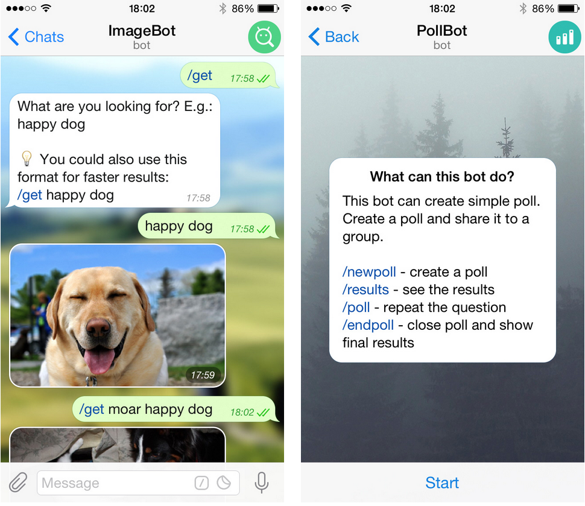
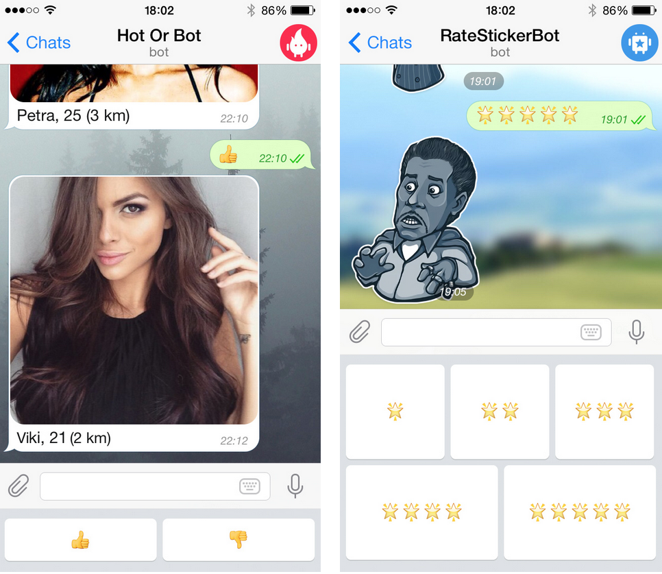
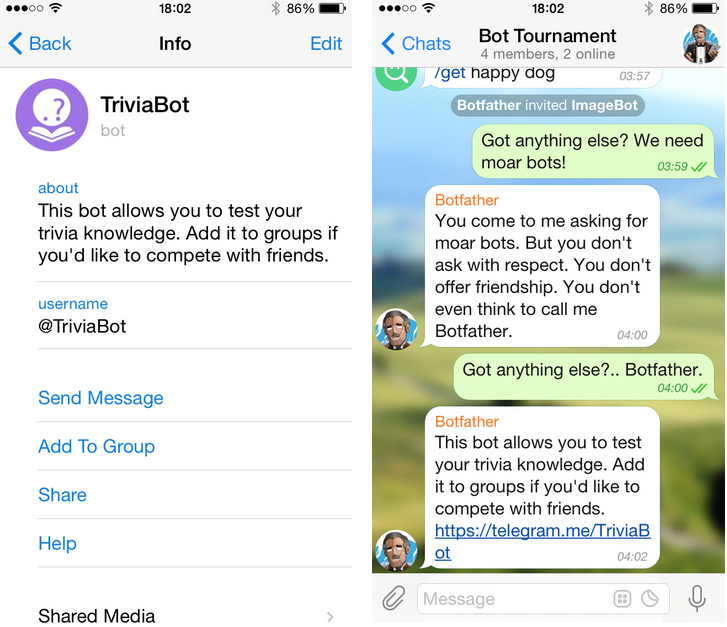

首頁 >
官方新聞 > Telegram 機器人平台（原文）（最新手機版中文化檔案）
Telegram 幾乎是自由和開放的 – 我們的程式碼就如同我們的 API 一樣，是開放給大家的。今天，我們正走向開放的另一個步：透過推出一個機器人 API 和平台給第三方開發人員創建機器人。
我們所說的機器人只是通過軟體操作的 Telegram 帳號 - 而不是真的人 - 它們通常會有人工智慧的功能。它們可以做任何事 – 教導、播放、搜尋、廣播、提醒、連接，及與其它服務進行整合，甚至將命令傳遞給物聯網。

今天手機的 Telegram 3.0 版更新，使得與機器人互動變得超簡單。在大多數情況下，您甚至不必輸入任何東西，因為機器人將為您提供一組自訂按鈕。
“ 每一個應用程式需要一套稍微優化的專用按鈕。”
史蒂夫·喬布斯，2007年 iPhone 推出時說的
機器人現在可以為您提供自訂鍵盤，以用於特定的任務。它可能看起來像這樣的例子：

以下是由平台測試者上週末建立的一些樣品機器人：（用"搜尋"找出這些機器人）
我們的測試者只需要幾個小時來打造這些機器人- 建立一個新的機器人是一件輕而易舉的事。只要用 @BotFather 產生一個密鑰，並用一個簡單的 HTTPS 的 API 來控制您的機器人。如果您是一名工程師，請看看我們介紹機器人的詳細資料。
在 Telegram 中的機器人看起來不同於人類用戶：它們的聊天及個人資料畫面有一點稍微不同，且當它們加入到群組後，預設它們並不會存取所有訊息。
接管世界
一旦啟動您的機器人，您將看著它擴散。在 Telegram 中，任何轉寄的訊息中包含一個指向它的原始發送者的連結。這意味著從你的機器人轉寄到個人或群組的任何訊息相當於是一個轉推 - 所以機器人據有病毒的特性。
此外，所有的機器人在它們的個人資料中都有一個「加入到群組」和一個「分享」的選項。您可以設定「一段描述」以及「一個連結」，當人們在 Telegram 或其它平台分享您的機器人時，那將被使用上。

一指向機器人的典型連結看起來像這樣：
|https://telegram.me/your_bot
開啟此類連結將開始一個與機器人的聊天，如果您已經安裝了 Telegram。這些連結很容易識別，因為所有的機器人用戶名稱必須以 bot 為結尾。
如果機器人開發人員希望通過他們的機器人傳遞一些額外的資訊（像是例如一個可信的密鑰，請查看深度連結），連結也可能是這樣的：
|https://telegram.me/your_bot?start=value
機器人來了
從今天開始，您會在 Telegram 和其它地方看到像這樣的連結。擁抱它們，它們是機器人！它們將提供那些您要求我們的服務 - 問卷調查、新聞、遊戲、整合、電子管家或貓的圖片。透過機器人，任何夢想可以成真。
電報團隊，
2015年6月24日
P.S. 所有的機器人開發人員歡迎您分享想法給我們的「機器人 API」 @BotSupport 。
|您可以在機器人的介紹和機器人 API 手冊中閱讀到更多關於我們機器人平台的資訊。